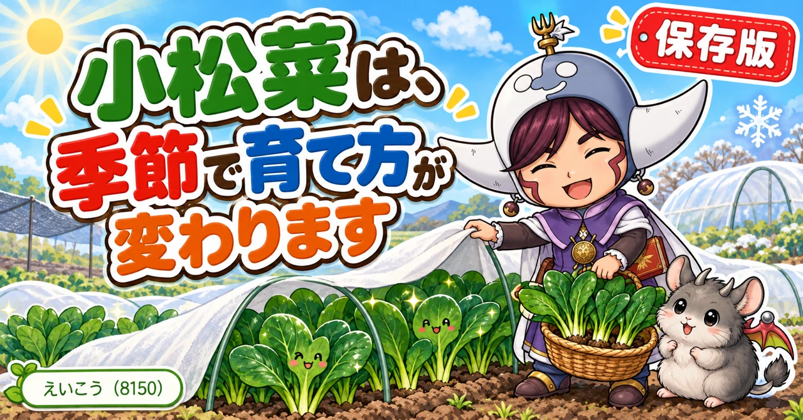
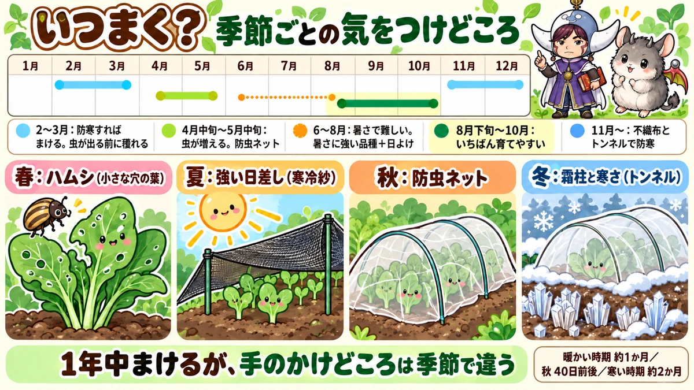
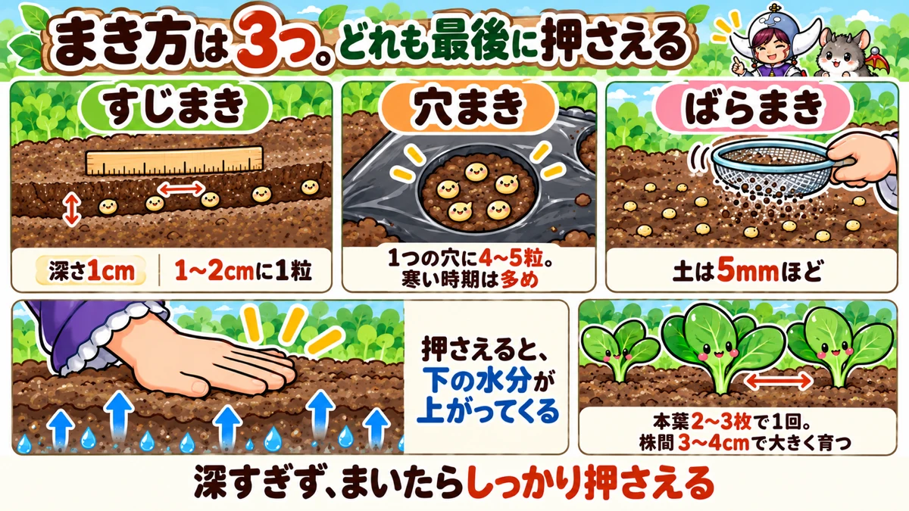
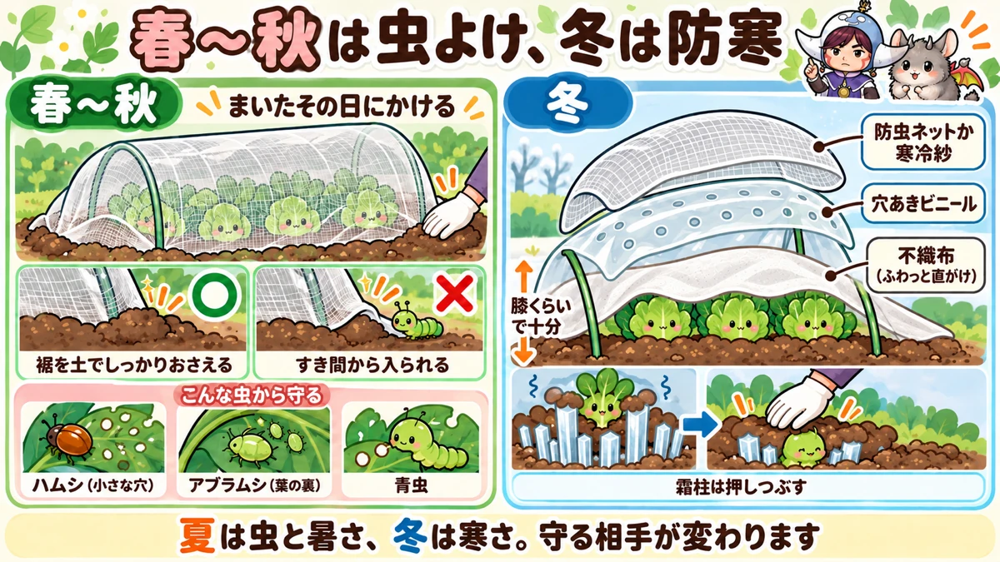

小松菜の育て方｜季節ごとのまき時、すじまき、間引き、虫よけ、冬の防寒、収穫

📖 この記事の目次
この記事で分かること
- 小松菜は、ほぼ1年中タネをまける葉物野菜です。ただ、育てやすさは季節によって大きく違います。
- いちばん育てやすいのは秋から冬です。虫が少なく、葉のきれいな小松菜が穫れます。
- タネは深さ1cmほどにまき、手でしっかり押さえるのが発芽のこつです。
- 間引きは、本葉が2〜3枚のころに1回。株と株のあいだを広げるほど大きく育ちます。
- 前の野菜の肥料が残っている畑なら、元肥はほとんど要りません。
- 春から秋にかけては、防虫ネットが欠かせません。冬は、不織布やビニールで寒さを防ぎます。
- 夏にまくなら、暑さに強い品種と、日よけがあると成功しやすくなります。
- とうが立っても、つぼみを菜花として食べられます。
小松菜は、おひたし、炒め物、汁物、お雑煮と、毎日の食卓で使いやすい葉物野菜です。育てやすい野菜の代表としてよく名前が挙がり、家庭菜園を始めたばかりの方にもすすめられます。
ただ、「虫に穴だらけにされた」「夏にまいたら芽が出なかった」「冬にまいたら全然大きくならない」という声もよく聞きます。小松菜は、季節に合わせた育て方さえ押さえれば、本当に手のかからない野菜です。この記事では、季節ごとの違いを軸に、まき方から収穫まで順番に書いていきます。
早見：小松菜の基本
まく時期の目安
- 春：4月中旬〜5月中旬ごろまで。6月以降は暑さで育ちが悪くなりやすい
- 夏：暑さに強い品種と日よけがあれば可能。ただし難しめ
- 秋：8月下旬〜10月。いちばん育てやすい
- 冬：11月以降は、不織布やビニールで防寒すればまける
まき方の目安
- 深さ：約1cm
- すじまき：1〜2cm間隔に1粒ずつ
- 穴まき：1つの穴に4〜5粒ほど。寒い時期は多めに
- まいたら：土をかけて手で押さえ、水をやる
収穫までの目安
- 暖かい時期：まいてから1か月ほど
- 秋：40日前後
- 寒い時期：2か月ほど見ておく

季節ごとの育てやすさ
小松菜は、ほぼ1年中まけます。ただ、季節によって「何に気をつければいいか」がまったく違います。ここを知っておくと、失敗がぐっと減ります。
秋：いちばんのおすすめ
秋は、小松菜がいちばん育てやすい季節です。気温がほどよく、育ちが早いうえに、夏にくらべて虫が減っていきます。
ただし、秋の初めはまだ虫が残っています。9月から10月にまくなら、防虫ネットをかけておくと安心です。
冬：虫がいない、ただし育ちはゆっくり
冬は、虫の被害がほとんどありません。葉がとてもきれいに育ちます。寒さに当たった小松菜は、味が濃くなるともいわれます。
そのかわり、気温が低いので、育つのに時間がかかります。12月にまくと、収穫までに2か月ほど見ておいたほうがよい、という説明もありました。防寒をしないと、芽が出なかったり、出てもなかなか大きくならなかったりします。
春：虫が動き出す前が勝負
春は、育ちが早い季節です。2月から3月にまけば、虫がまだ本格的に動き出す前に収穫まで持っていけます。
4月以降にまく場合は、虫が増えてくるので防虫ネットが必要です。春に育てるなら、5月中旬ごろまでにまき終えるのがひとつの目安です。6月、7月になると暑さで育ちが悪くなってきます。
夏：難しいが、できなくはない
夏は、小松菜にとっていちばん厳しい季節です。暑さと乾燥で芽が出にくく、出ても強い日差しで枯れやすいうえ、虫も多くなります。
それでも、暑さに強い品種を選び、日よけをすれば育てられます。夏まきのこつは、後の章でまとめます。
品種の選び方
小松菜は、品種がとても多い野菜です。タネの袋を見比べると、まける時期や得意な季節が書かれています。
季節に合った品種を選ぶ
タネの袋には、「暑さに強い」「寒さに強い」「1年中まける」など、その品種の得意な季節が書かれています。夏にまくなら暑さに強いもの、冬にまくなら寒さに強いものを選ぶだけで、成功しやすくなります。
動画で名前が挙がっていた品種
参考までに、動画の中でおすすめとして名前が挙がっていた品種を並べておきます。
- 清澄：暑さに強く、白さび病などの病気にも強いとされる。1年中まける品種として紹介されていた
- 夏楽天：暑さに強いとされる品種
- 寒さに強い品種：真冬でも安定して育つとして、いくつかの品種が紹介されていた
- 昔ながらの味の品種：味がよいと評判で、生でも食べられるとして紹介されていた
味については、品種による差はあまり出にくいという意見もあれば、この品種しか作らないという愛好家がいるという話もありました。まずは季節に合ったものを選び、慣れてきたら味で選んでみるのも楽しいと思います。
タネの値段と発芽
100円ショップのタネとホームセンターのタネを並べてまいた実験では、10日後の時点で、小松菜はホームセンターのタネのほうがよく芽が出ていました。粒も、ホームセンターのもののほうが大きくそろっていたそうです。ただ、ほかの野菜ではそれほど差が出ず、粒が小さいから育ちが悪いとは言い切れない、とも話していました。
土と肥料
前の野菜の肥料で育つ
小松菜は、肥料をそれほど多く必要としない野菜です。前に別の野菜を育てていた場所なら、残っている肥料だけで十分育つ、と説明されていました。特に秋から冬にかけてまくときは、元肥を入れずにそのまま始めてよい、という説明が多くありました。
ねぎの後、トマトの後、さといもやしょうがの後など、夏から秋の野菜を片づけた場所が、小松菜の植え場所としてよく紹介されていました。
初めての場所なら、2週間前に
何も育てていなかった場所や、土がやせている場所なら、まく2週間ほど前に、たい肥や肥料を土に混ぜておきます。肥料を入れた直後にまくと、芽や根を傷めることがあるので、少し間をあけるのが基本です。
同じ仲間を続けて植えるとき
小松菜は、連作による障害がほとんど出ない、と話していた動画もありました。ただ、小松菜はキャベツや白菜、大根、かぶと同じアブラナ科の仲間です。同じ仲間を続けて植えた場所では、根にこぶができる病気などが出ることもあるので、できれば別の仲間の野菜の後に植えるほうが安心です。

タネのまき方
小松菜のまき方には、大きく分けて3つあります。畑の広さや、どれくらいの大きさで穫りたいかで選びます。
すじまき：基本のまき方
- 棒や指で、深さ1cmほどの溝をまっすぐ作る
- 溝の中に、1〜2cm間隔で1粒ずつ置いていく
- 横から土を寄せて、溝を埋める
- 手のひらで上からしっかり押さえる
- 水をやる
1粒ずつ間隔をあけて置くのは、手間がかかります。それでも、適当にぱらぱらとまくと、芽が固まって出て、間引くときに隣の株までいっしょに抜けてしまいます。1〜2cmの間隔をあけておけば、1本ずつ抜いていくだけで株間がそろいます。
段ボールを細長く切り、2cmごとに印をつけた「ものさし」を作って、それに合わせてまいている農園もありました。支柱に印をつけても代わりになります。
穴まき：穴あきマルチを使うとき
穴あきマルチを張った場所では、1つの穴に4〜5粒ずつまきます。
- ペットボトルのふたなどで、深さ1cmほどのくぼみを作る
- くぼみに4〜5粒を落とす
- 土をかけて、押さえる
春なら、1つの穴に4粒まいて、うまくいけば間引かずに4本とも収穫できる、という説明もありました。寒い時期は芽が出そろわないことがあるので、少し多めにまいておきます。
ばらまき：小さく穫るとき
畑の一角に、タネをぱらぱらとばらまく方法もあります。ふるいで土を5mmほど薄くかけ、板や手で押さえます。小さいうちから間引きをかねて収穫していくやり方で、冬の栽培と相性がよい方法です。くわしくは冬の章で書きます。
季節でマルチを使い分ける
冬は、穴あきマルチを張って穴まきにすると、土が温まりやすく、雑草も抑えられます。一方、暖かくなってくる春からは、マルチを張らずにすじまきにする、という使い分けが紹介されていました。気温が上がる時期にマルチを張ると、土が熱くなりすぎることがあるからです。
押さえる作業が、発芽を左右する
まき方は違っても、共通して大事なのが「押さえる」ことです。
タネの上の土を手のひらでしっかり押さえると、タネと土が密着して、土の中の水分がタネに伝わりやすくなります。土が乾きにくくなり、水をやったときにタネが流れることも防げます。体重をかけるくらいしっかり押さえる、と話していた方もいました。
まいたあとの水
まいたあとは、たっぷり水をやります。土がもともと湿っている日は、水やりを省いてもかまいません。芽が出るまでは、土の表面を乾かさないようにします。
水やり
まいた直後は、土の様子を見て
まいたあとは水をやりますが、土がもともと湿っているなら、無理にやらなくてもかまいません。逆に土が乾いているなら、しっかりやります。水をまったくやらなくても芽が出る場合もある、と説明されていました。
じょうろは、うねの外で出しはじめる
じょうろの水は、出しはじめが勢いよく出たり、ぼたぼた落ちたりします。うねの外で水を出しはじめ、流れが落ち着いてから、うねの上を1往復ずつ動かします。止めるときも、うねの外で止めます。勢いのある水が当たると、まいたタネが流れてしまうからです。
冬は、やりすぎない
冬にまいた場合、水のやりすぎは失敗のもとになります。水をやるたびに土の温度が下がり、芽が出るのに必要な温度を保てなくなるからです。
真冬にまいた場合は、まいた直後の1回のあとは、ほとんど水やりは要らない、と説明されていました。マルチを張っている場合も、その後の水やりはほぼ不要です。
芽が出ないとき、水を足さない
冬は、まいてから芽が出るまで1週間から10日ほどかかります。芽が出ないからといって水を足すと、かえって芽が出にくくなります。10日ほどたっても芽が出なければ、水を足すより、まき直したほうが立て直しやすい、という考え方です。
不織布で、乾きを防ぐ
まいたあとに不織布をかけておくと、土の乾きを防げるので、水を足す必要が少なくなります。マルチを張らない場合も、不織布はかけておくと安心です。
育ってからの水やり
畑で育てる場合、芽が出そろってからは、雨が少なく土が乾いているときに水をやる程度で育ちます。プランターは土が乾きやすいので、表面が乾いたらたっぷりやります。
間引きと株間
1回目は、本葉が2〜3枚のころ
芽が出そろって、本葉が2〜3枚になったころ、高さでいうと4〜5cmほどになったころに、1回目の間引きをします。育ちの悪いもの、ひょろひょろと伸びたもの、隣とくっつきすぎているものから抜きます。
株間で、仕上がりの大きさが決まる
小松菜は、株と株のあいだを広くとるほど大きく育ちます。3〜4cmほどあければ大きく育ち、まいたままにしておくと小さな株のまま育つ、と説明されていました。
大きい株を少しずつ穫りたいのか、小さい株をたくさん穫りたいのか。好みに合わせて間引く量を決めればよい、ということです。
穴まきなら、1つの穴に3〜4本
穴まきの場合、小松菜は1つの穴に3〜4本残しても十分育ちます。5本以上残すと窮屈になるので、育ちの悪いものから抜いて3〜4本にします。
間引いた株も食べられる
間引いた小さな株は、捨てずに食べられます。みそ汁の具やおひたし、サラダの彩りにも使えます。間引きは、最初の収穫だと考えると楽しくなります。
プランターなら、間引かなくてもある程度育つ
プランターで育てる場合、市販の培養土には肥料が入っているので、間引かずにそのまま育ててもある程度は育つ、という説明もありました。
追肥と病気
追肥は、育ちが悪いときだけ
小松菜は、育つ期間が短い野菜です。前の野菜の肥料が残っている場所なら、追肥をしなくても収穫まで育つことがほとんどです。
追肥が必要になるのは、肥料を入れずに急いでまいた場合や、葉の色が薄く、育ちが止まっているように見える場合です。そのときは、株のあいだに少しだけ肥料を入れ、水をやって土になじませます。
肥料のやりすぎは、病気のもと
肥料は、多ければよく育つというものではありません。基準より多くやると、株全体がやわらかく弱く育ち、病気が出やすくなる、と説明されていました。追肥は「足りないと感じたら少し」くらいがちょうどよい野菜です。
白さび病
小松菜やかぶに出やすい病気に、白さび病があります。
- 葉の表に、白っぽくぼやけた斑点が出る
- 葉の裏に、ふくらんだイボのような白い斑点ができる
- 進むと、葉が黄色く変わっていく
見つけたら、その葉を摘み取って畑の外で処分します。そのまま引きちぎると、斑点が破れて病気のもとが飛び散ることがあるので、ビニール袋をかぶせるようにしてそっと取り除く、という方法も紹介されていました。
白さび病を防ぐ4つのこと
- 追肥をやりすぎない
- 株が混み合わないように間引き、風通しをよくする
- 収穫できる株は早めに収穫し、畑を混み合わせない
- 土づくりのときによく耕して水はけをよくする。水はけが悪い畑は、うねを高くする
病気に強いとされる品種を選ぶのも、ひとつの方法です。夏のあいだ畑を休ませて太陽の熱で土を消毒しておくと、白さび病などを減らす効果が期待できる、という説明もありました。

虫の対策
小松菜は、アブラナ科の中でも特に虫に好かれやすい野菜です。無農薬で育てるなら、虫の対策がいちばんの課題になります。
防虫ネットは、まいたその日に
春から秋にかけては、タネをまいたらすぐに防虫ネットをかけます。芽が出てからかけたのでは、すでに虫が入りこんでいることがあります。ネットのすそは、すき間ができないように土で埋めるか、ピンでとめます。
注意したい虫
- ハムシの仲間：小さな穴をたくさんあける。小松菜に多い被害
- アブラムシ：葉の裏や新芽に群がる。株が混み合うと増えやすい
- 青虫、ヨトウムシ：葉を大きくかじる
春の2月から3月は、ハムシがまだ活発に動いていないので、きれいな小松菜が穫りやすい時期だと説明されていました。
アブラムシが出てしまったら
防虫ネットのすき間から入られて、アブラムシが増えてしまうこともあります。数が少ないうちなら、手でこすり落とすか、水で洗い流します。油と石けんを水に溶かした液をかけて10分ほど置き、そのあとじょうろの水でアブラムシを洗い流す、という方法も紹介されていました。アブラムシは放っておくと一気に増えるので、見つけたら早めに手を打ちます。
ほかの野菜と混ぜて植える
小松菜のようなアブラナ科の野菜と、春菊やレタスのようなキク科の野菜を混ぜて植えると、虫を遠ざける効果が期待できる、という紹介がありました。においの違う野菜を並べることで、虫が寄りつきにくくなる、という考え方です。
ほかにも、にらやにんじんと混ぜて植える方法が紹介されていました。どれも確実に防げるものではありませんが、防虫ネットと組み合わせると心強い工夫です。
豆の風よけにもなる
冬を越すそら豆やスナップエンドウのあいだに小松菜をまく方法も紹介されていました。小松菜は30cmほどの高さまで葉を広げるので、まだ小さい豆の苗に冷たい風や霜が直接当たるのを防いでくれる、という考え方です。キャベツのそばに小松菜をまく例もありました。
なすの足もとに植える
なすの株元のあいたスペースに、小松菜をまいている例もありました。小松菜のほうが虫に好かれやすいので、なすの代わりに虫を引き受けてくれる、という考え方です。ただ、それでは小松菜がかわいそうなので、まとめて防虫ネットで囲っていました。
夏にまくときのこつ
暑さに強い品種を選ぶ
夏にまくなら、まず品種選びです。タネの袋に「暑さに強い」と書かれたものを選びます。7月にまいた場合でも、1か月半ほどで収穫できると説明されていました。
発芽までは水を切らさない
暑く乾いた土では、芽が出ません。芽が出るまでは、水やりをしっかり続けます。
日よけで、芽を守る
芽が出た直後のやわらかい時期が、いちばん枯れやすい時期です。真夏の強い日差しを、寒冷紗などで少しさえぎってあげます。日をさえぎりすぎると、ひょろひょろに育ってしまうので、さえぎる割合が低めのものを選ぶのがこつだそうです。手元になければ、不織布を少し長めにかけておく方法もあります。
まく量を欲張らない
夏は育ちが早く、一気に大きくなります。たくさんまくと、穫りきれないうちに大きくなりすぎてしまうので、食べきれる量だけまくのがよいと話していました。
夏はお休みするのも手
どうしても夏の栽培が難しいと感じたら、7月から8月は小松菜をお休みし、そのあいだに土の手入れをして、秋にまき直す方法もあります。
冬に育てるときのこつ
防寒を重ねる
冬にまく場合は、寒さを防ぐ工夫が欠かせません。動画で紹介されていたのは、次のような重ね方です。
- いちばん下：不織布を、タネの上にふわっと直接かける
- その上：防虫ネットや、穴のあいたビニールでトンネルを作る
- すそ：ピンでとめて、風でめくれないようにする
不織布は、ぴんと張らずにふわっとかけると、通気がよく蒸れにくい、とも説明されていました。
トンネルの作り方
冬のトンネルの作り方も、動画でくわしく紹介されていました。
- トンネル用の支柱を3本使う
- 高さは膝くらいで十分。小松菜は大きくならないので、高くする必要はない
- 両はしの2本は、外側に少し開くように差す。こうすると、ビニールやネットがきれいに張れる
- まん中の1本は、まっすぐ立てる
- 3本の高さをそろえてから、ビニールをかける
ビニールは、穴のあいたものを
保温用のビニールは、穴のあいたものを使います。穴のないビニールで閉じきってしまうと、晴れた夜に熱が逃げて、明け方にトンネルの中の温度が下がりすぎることがある、と説明されていました。穴のないビニールしかないときは、何か所か穴をあけてから使います。穴のあいたもののほうが通気がよく、芽が蒸れて枯れることも防げます。
ビニールの上に、もう1枚
ビニールだけでは、冬の強い風でめくれてしまうことがあります。その上から防虫ネットをかけると、風よけになり、保温の効果も上がります。白い寒冷紗をかけると、さらに保温の効果が高くなるそうです。防虫ネットも寒冷紗もなければ、不織布を2枚重ねる方法もあります。
肥料を入れる時間を惜しむ
11月に入ってから小松菜を始める場合、肥料を入れて2〜3週間待ってからまくと、そのあいだにどんどん寒くなり、芽が出にくくなります。この時期は、肥料を入れずにとにかく早くまくほうがよい、という考え方が紹介されていました。育ちが悪ければ、あとから追肥で補えばよい、ということです。
霜柱に気をつける
真冬は、霜柱にも気をつけます。霜柱が立つと、小さな株の根が持ち上げられて土から浮き、乾いて枯れてしまうことがあります。霜柱が立ったら、手で上から押しつぶして、根を土に戻してあげます。マルチの下に霜柱が立ったときも、マルチの上から押さえます。
株元の草を取る
冬は雑草が少ない季節ですが、トンネルで暖めていると、中で草が伸びてくることがあります。特に株元に生えた草は、小松菜の養分を取ってしまうので、見つけたらこまめに取ります。
不織布を外す時期
春や夏は、芽が出てから1〜2週間で不織布を外します。一方、寒い時期は、芽が出たあとも不織布をかけておいたほうがよく育つそうです。草丈が10〜20cmほどに育つまでは、かけたままにしておきます。
冬ならではの、間引かない育て方
冬の小松菜には、少し変わった育て方もあります。
ふつうは、育ちの遅い株を間引いて、残した株を大きく育てます。冬の方法はその逆で、間引きをしないで密にまき、大きくなったものから順に収穫していきます。大きい株を抜くと、そのまわりの小さい株が育ってきて、また食べごろになる。それをくり返すやり方です。
夏にこれをやると、混み合ったところに虫がつきやすくなります。冬は虫がほとんどいないので、混み合っていても葉がきれいなまま育つ、というのがこの方法の理屈です。
ばらまきは、日当たりのよい場所で
冬のばらまきでは、場所選びも大切です。トンネルや不織布をかけると、そのぶん日の光が少しさえぎられます。だからこそ、できるだけ日当たりのよい場所を選びます。
タネは1か所に固まらないように、全体に散らすようにまきます。ふるいで土を5mmほどかけたら、手のひらで体重をかけるくらいしっかり押さえます。押さえることで、土の下の水分が上がってきて、芽が出やすくなる、と説明されていました。マルチは要りません。
12月以降は、かなり厳しい
真冬は、発芽に必要な温度を保つのが難しくなります。12月になると、小松菜のような葉物でも、簡単なトンネルだけでは育てるのが難しくなる、という意見もありました。冬にまくなら、できるだけ早い時期にまくのが安全です。
夏野菜の予定地には、まかない
冬から春にかけてまくときに気をつけたいのが、場所です。2月ごろに夏野菜を植える予定の場所へ小松菜をまくと、4月から5月まで場所がふさがり、夏野菜の準備が間に合わなくなります。冬から春の小松菜は、夏野菜を遅めに植える場所や、夏野菜を植えない場所にまくように計画します。
プランターで育てる
プランターの準備
小松菜は、プランターでも育てやすい野菜です。底に石を敷かなくてよいタイプのプランターなら、市販の培養土をそのまま入れてかまいません。土を入れたら平らにならし、プランターを軽くとんとん叩いて、すき間なく土を詰めます。
まき方
プランターの長い辺に沿って、深さ1cmほどの溝を作り、1cm間隔くらいで1粒ずつ置いていきます。土を横から寄せてかけ、手でやさしく押さえます。押さえることで、水をやったときに土が乾きにくくなります。
最初の水は、底から流れ出るまで
まき終えたら、プランターの底の穴から水が流れ出てくるまで、たっぷり水をやります。勢いが強すぎてタネが飛び出してしまったら、その場でまき直せば大丈夫です。
プランターの収穫
芽が出たら、葉が重なり合わないように間引きながら育てます。2か月ほどで、10〜15cmくらいの大きさになったら収穫どきです。株ごと引き抜くか、外の葉から切り取りながら収穫します。
ほかの葉物といっしょに
小松菜、かぶ、ほうれん草のように、まく時期がそろう野菜なら、1つのプランターに列を分けてまくこともできます。植えてから2か月ほどが収穫の目安です。
収穫
収穫の目安
まいてから、暖かい時期なら1か月ほど、秋なら40日前後、寒い時期なら2か月ほどで収穫できます。食べやすい大きさに育ったら、食べごろです。
大きくなりすぎる前に
小松菜は、育ちが早いぶん、収穫が遅れるとあっという間に大きくなります。特に暖かい時期は、大きくなりすぎないうちに、早め早めに収穫していきます。
株ごと抜くか、切って再生させるか
株ごと引き抜いて収穫するのが一般的ですが、根元を少し残して葉だけを切る方法もあります。なすの株元で育てていた小松菜を、根元を残して収穫し、また生えてくるのを待っている例もありました。
とうが立ったら、菜花として
春になると、小松菜は茎をのばしてつぼみをつけ、花を咲かせます。これを「とう立ち」といいます。とうが立つと葉はかたくなりますが、つぼみの部分は菜花として食べられます。
花が咲く少し前の、手でぽきっと折れるくらいのやわらかいつぼみを摘みます。小松菜の菜花には小松菜らしい少しの渋みがあって、白菜や大根の菜花とはまた違う味わいがある、と紹介されていました。穫り遅れた小松菜も、最後まで楽しめます。
説明が分かれるところ
小松菜の育て方は、話す人や条件によって説明が分かれるところがあります。両方の考え方を並べておきます。
タネの深さ：1cmか、ごく浅くか
多くの動画では、深さ1cmほどにまく、と説明されていました。一方で、冬にまく小さなタネは、指で穴を掘るとかえって深くなりすぎることがある、という指摘もありました。この動画では、先に土を手で押さえて平らにし、その上にタネを置いて指で軽く押さえる、という浅いまき方を紹介していました。
どちらも「深すぎるとよくない」という点は同じです。指で穴を掘るときは、深くなりすぎていないかを確かめてからまくと安心です。
冬の間引き：するか、しないか
穴まきの場合は、冬でも1つの穴を3〜4本に間引く、という説明がありました。一方で、冬は間引かずに育て、大きくなったものから収穫するほうがよい、という説明もあります。間引かずに残した株は、寒い風からおたがいを守る役目もする、と話していました。
穴まきで大きめの株を穫りたいなら間引く、ばらまきやすじまきで小さい株をたくさん穫りたいなら間引かない。目的で使い分けるとよいと思います。
元肥：入れるか、入れないか
前の野菜の肥料が残っている場所なら入れない、という説明が多い一方、何も育てていなかった場所では、まく前に肥料を入れておく説明もありました。どちらも「その場所に肥料が残っているかどうか」で判断している点は同じです。
よくある失敗
夏にまいて、芽が出ない
暑さと乾燥で芽が出ない、出ても枯れてしまう。夏まきでいちばん多い失敗です。品種選び、水やり、日よけの3つを見直します。
虫に穴だらけにされた
防虫ネットをかけていない、かけるのが遅かった、すそにすき間があった。この3つが原因のことが多いです。まいたその日にかけて、すそまでしっかりふさぎます。
冬にまいたら、大きくならない
寒さで育ちが止まっています。不織布とトンネルで防寒し、収穫までの期間を長めに見ておきます。小さいうちから少しずつ収穫していくのも手です。
一度にまきすぎて、食べきれない
小松菜のタネは、1袋にたくさん入っています。全部まくと、一度に食べごろが来て食べきれません。時期をずらして少しずつまくと、長く収穫が続きます。
よくある質問
1年に何回くらい育てられますか
小松菜は育つ期間が短いので、同じ場所で季節を変えて何度も育てられます。1年に5回ほど育てている、と話していた方もいました。ただ、真冬と真夏は難しくなるので、無理のない季節を選んで回すのがおすすめです。
プランターでも、畑と同じように育ちますか
育ちます。プランターは土の量が少ないので、乾きやすい点に気をつけます。市販の培養土には肥料が入っているので、元肥は要りません。
まいてから、どのくらいで芽が出ますか
寒い時期は、まいてから1週間から10日ほどかかる、と説明されていました。暖かい時期は、それより早く芽が出てきます。冬に10日たっても芽が出ないときは、水を足すより、まき直したほうが早く立て直せます。
余ったタネは、どうすればいいですか
小松菜のタネは、1袋にかなりの量が入っています。冬に、余ったリーフレタスや水菜などのタネと混ぜて、畑の一角にばらまく方法が紹介されていました。いろいろな葉物が混ざって育ち、ベビーリーフのように少しずつ収穫できます。ただ、時間がかかるので、春から夏野菜を植える場所は避けます。
小松菜の名前の由来は
東京の小松川のあたりが、小松菜の発祥の地といわれています。そこで作り続けられてきた昔ながらの品種も、タネとして手に入ります。お正月のお雑煮に入れる青菜も、東京では小松菜、関西では水菜というように、土地ごとに違っていた、という話も紹介されていました。
学ぶ：なぜ冬の小松菜は虫がつかないのか
虫は寒いと動けない
小松菜につく虫の多くは、暖かい季節に活発になり、寒くなると動きがにぶります。冬に虫の被害がほとんど出ないのは、小松菜が強くなったからではなく、虫のほうが動けなくなっているからです。
だから、冬は密植できる
虫が少ない冬は、株が混み合っていても問題が起きにくくなります。冬に間引かずに育てる方法が成り立つのは、このためです。逆に夏は、混み合ったところに虫が集まりやすいので、間引いて風通しをよくすることが大切になります。
なぜ、押さえると芽が出やすいのか
もうひとつ、タネまきで「押さえる」ことの理由も見ておきます。
土の中には、細かいすき間がたくさんあります。土を上から押さえてすき間を小さくすると、細い管を水がのぼっていくのと同じしくみで、土の下のほうの水分が表面近くまで上がってきます。タネのまわりの土が湿った状態に保たれるので、芽が出やすくなる、というわけです。
逆に、ふかふかのままの土では、すき間が大きくて水が上がってこず、表面からどんどん乾いていきます。小松菜のように浅くまくタネほど、この差が大きく出ます。まいたあとにしっかり押さえるひと手間が、芽のそろい方を大きく変えます。
同じ野菜でも、季節で育て方が変わる
小松菜は「1年中まける」野菜ですが、季節ごとに気をつけることはまったく違います。夏は暑さと虫、冬は寒さ。季節に合わせて手のかけどころを変えることが、小松菜をうまく育てるいちばんのこつです。
まとめ
ここまで読んでくださって、ありがとうございます！
小松菜の育て方のポイントを、もう一度まとめておきます。
- ほぼ1年中まけるが、いちばん育てやすいのは秋から冬
- 季節に合った品種を選ぶ。夏は暑さに強いもの、冬は寒さに強いもの
- 前の野菜の肥料が残っていれば、元肥はほとんど要らない
- 深さ1cm、すじまきなら1〜2cm間隔に1粒。まいたら手でしっかり押さえる
- 間引きは本葉2〜3枚のころ。株間を広げるほど大きく育つ
- 春から秋は、まいたその日に防虫ネット
- 夏は、暑さに強い品種、水やり、日よけの3つ
- 冬は、不織布とトンネルを重ねて防寒。間引かずに大きいものから穫る方法もある
- とうが立ったら、つぼみを菜花として食べる
小松菜は、季節に合わせた手のかけどころさえ分かれば、何度でもくり返し育てられる野菜です。まずは、いまの季節に合った品種のタネを1袋選んで、少しずつまいてみてください🥬
小松菜の種
季節に合った品種を選ぶのが成功の近道です。1袋にたくさん入っているので、時期をずらして少しずつまきましょう。


防虫ネット
春から秋は、まいたその日にかけます。すそは土でしっかり埋めて、すき間をなくします。

不織布
まいた直後の乾燥よけ、冬の防寒に。寒い時期は、芽が出たあともしばらくかけておきます。
![[商品価格に関しましては、リンクが作成された時点と現時点で情報が変更されている場合がございます。]](https://hbb.afl.rakuten.co.jp/hgb/56bc237a.e97551b1.56bc237b.2513ed10/?me_id=1310260&item_id=10000879&pc=https%3A%2F%2Fthumbnail.image.rakuten.co.jp%2F%400_mall%2Fdiokasei%2Fcabinet%2F007fusyokufu%2F12g%2Fimgrc0092049705.jpg%3F_ex%3D240x240&s=240x240&t=picttext "[商品価格に関しましては、リンクが作成された時点と現時点で情報が変更されている場合がございます。]")
あわせて読みたい


次に読む
記事一覧へ